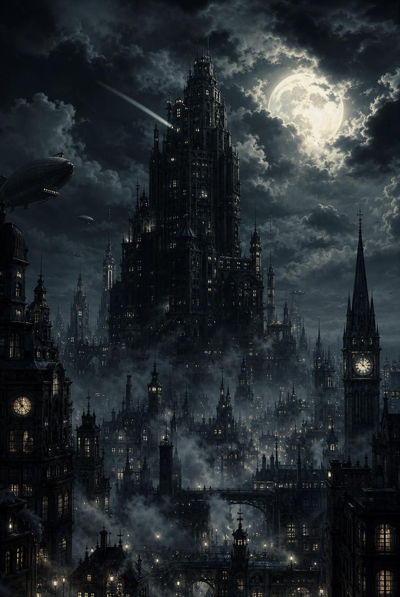
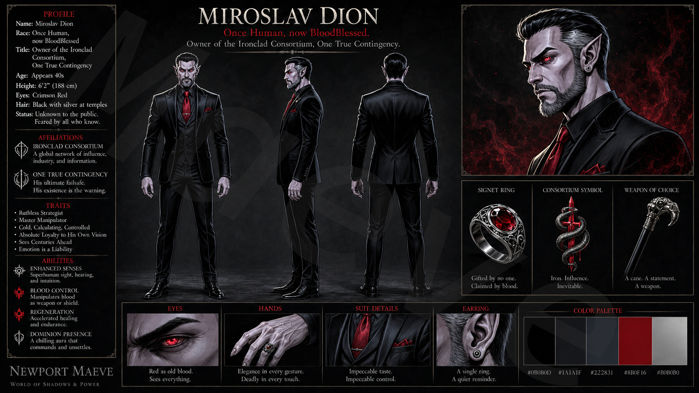
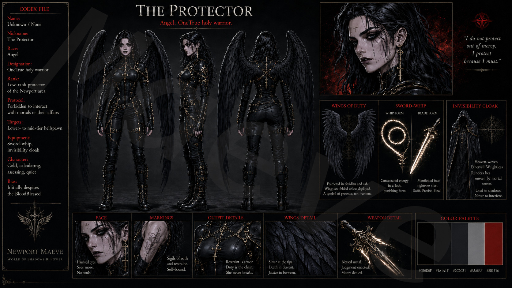
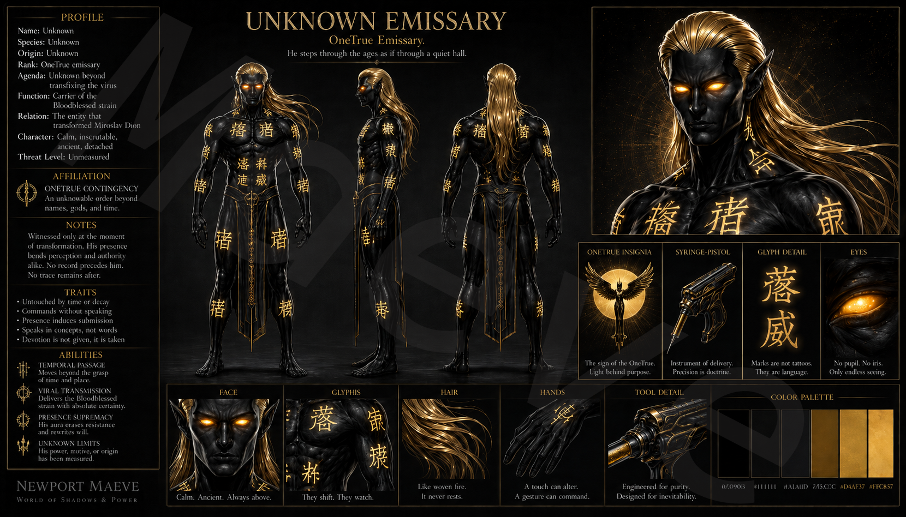
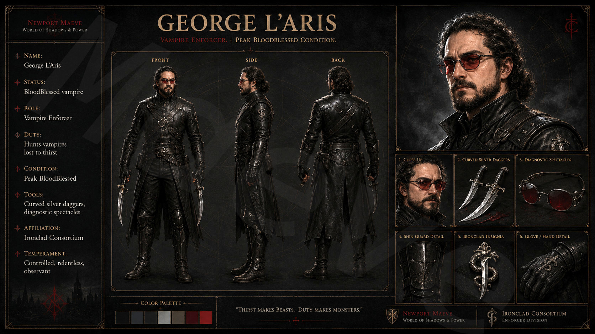
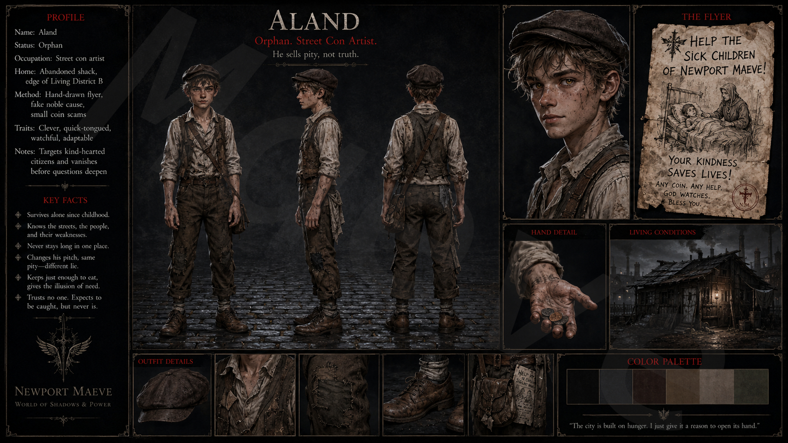
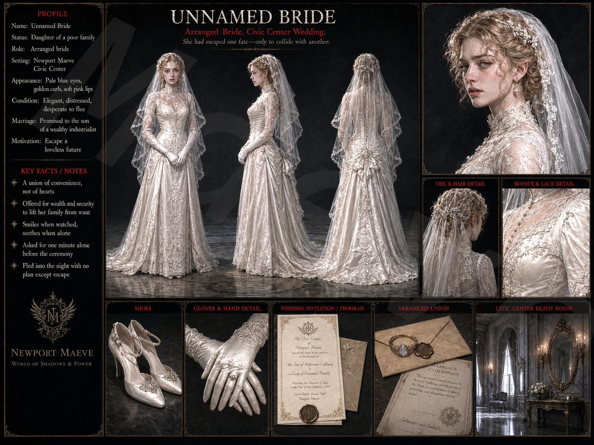
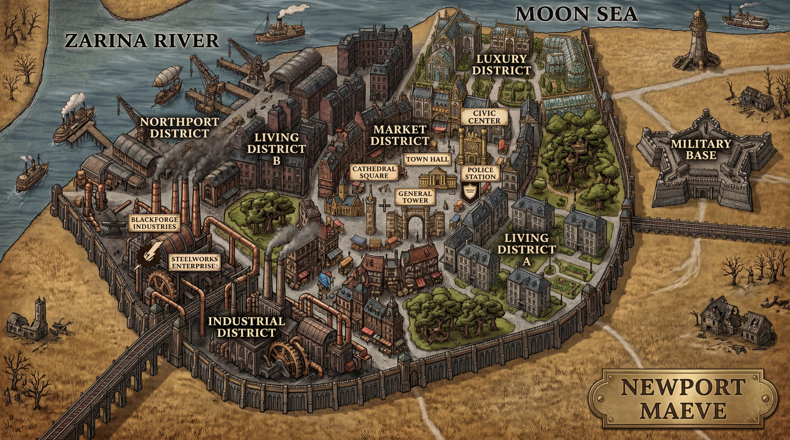

The Series
The Newport-Maeve Chronicles is a dark fantasy series set in an alternate world where vampires, angels, and demonic forces exist alongside a society of brass, steam, and ruthless progress.
At its centre: Miroslav Dion — the world's first vampire. A former soldier turned centuries-old power broker, who has outlived kings, rebuilt empires, and now faces his most dangerous assignment yet: a city at the edge of darkness.
Newport Maeve is the Confederacy's crown jewel — the most advanced city of the age. And according to forces beyond mortal understanding, it is also the thinnest point between this world and what hungers beyond it.

The Audiobook
The official prequel to the Newport-Maeve Chronicles. Nine chapters. One immortal. A city that does not yet know what is coming.
Watch on YouTube →The Cast
Immortals and orphans. Angels and enforcers. Each carries a secret the city does not yet know.






Hover to reveal. More on the fandom wiki →
From the Prequel
“You presume the One True is asking.”
— The Entity, to Dion
“Because it is the pinnacle, your crowning monument to progress. The most technologically advanced city of your age. Where ambition walks hand in hand with hubris. And progress breeds corruption. Corruption blossoms into indulgence. And indulgence sharpens hunger into obsession, polishes desire until it gleams. The hellspawn, Dion… they do not feed on blood or flesh. They feed on that refinement, on cravings shaped by civilization itself.”
— The Entity, on Newport Maeve
“Listen, Protector. It will not happen. I have a strict protocol for who can be what in my society. If you find otherwise, you can seek me out again—and then we can have any kind of conversation you wish.”
— Dion, to the Protector
The World
Where the Zarina River meets the Moon Sea. The Confederacy's crown jewel — and its most dangerous thin point.

Newport Maeve — City Map, Prequel Era
Follow the Chronicles
The story is growing. Follow production updates, explore the lore, and see the world take shape.